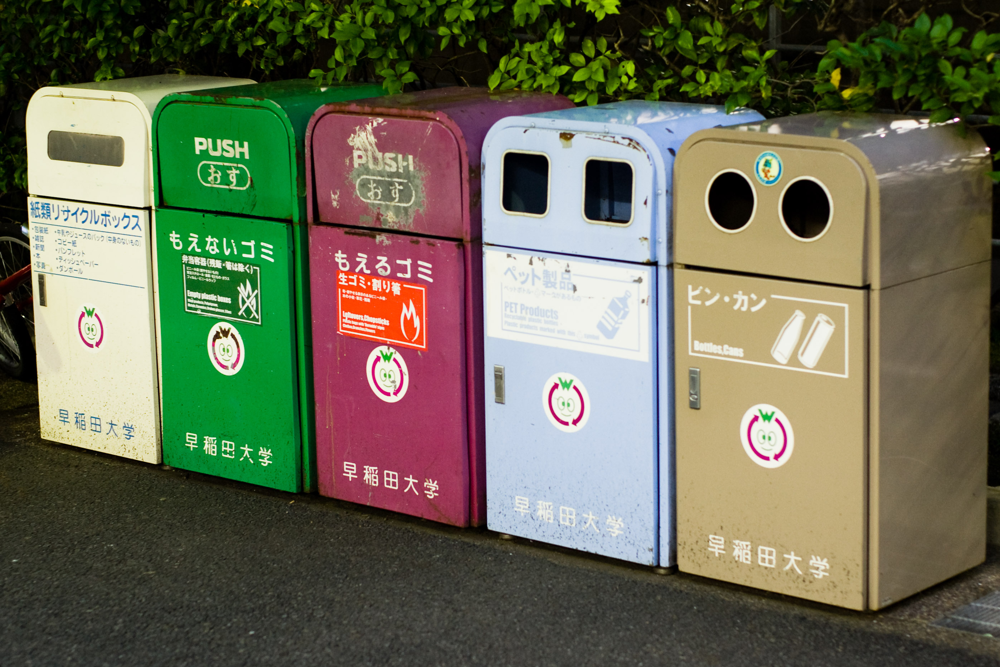

Recycling reduces the need for additional extraction of natural resources.
Due to Japan's scarce natural resources, it is important that efficient & effective methods of recycling materials are developed.
Japan recycles many materials, such as glass, paper and plastic. Recycling is enforced under laws by the Ministry of the Environment. Under many other laws, home appliances, construction materials, vehicles and food are also recycled.
Source